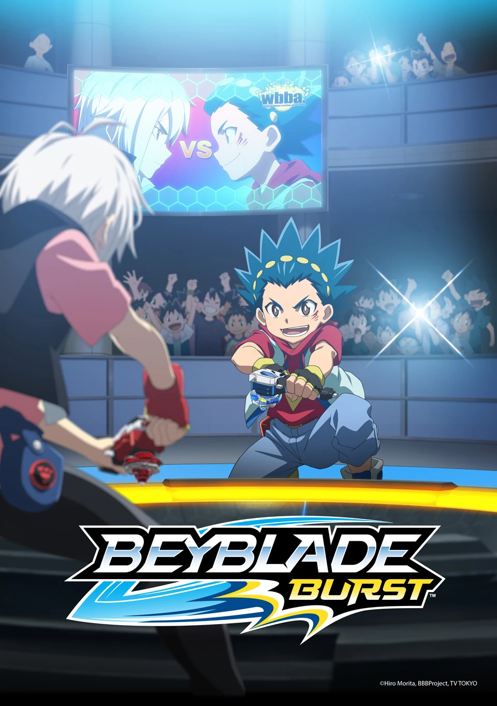
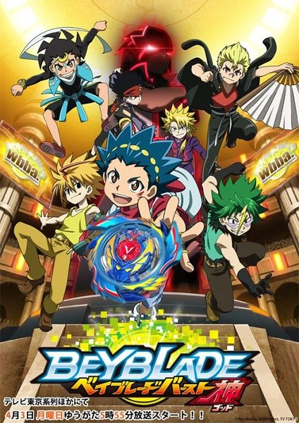
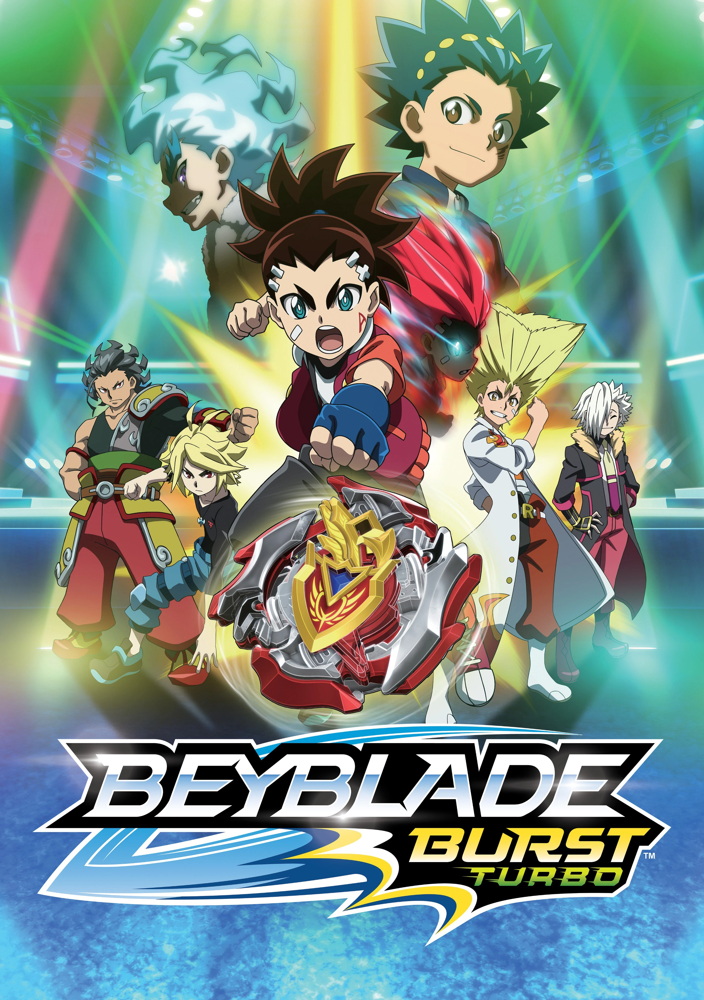
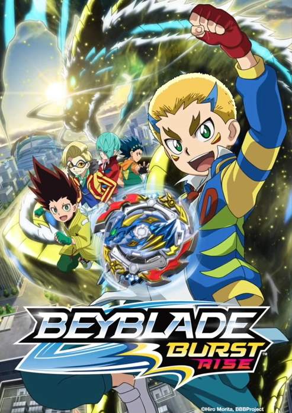
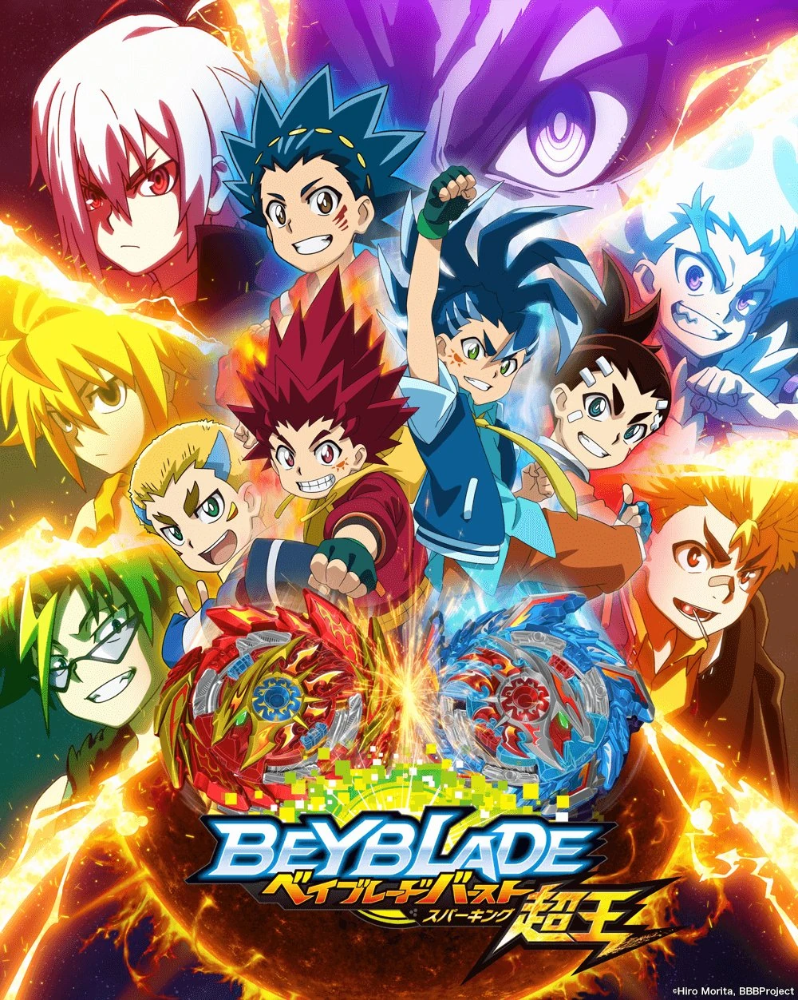
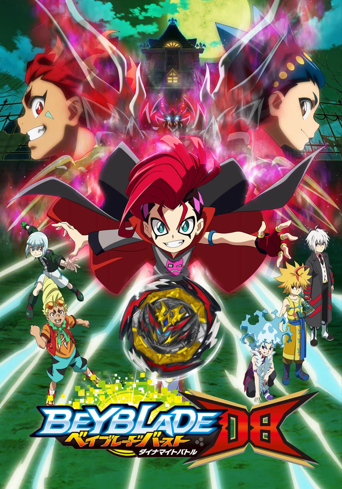

Beyblade Burst (2016)
Valt Aoi begins his journey as a blader, forming a bond with his Beyblade, Valtryek, and battling his way up through local and national tournaments.

Beyblade Burst Evolution (2017)
Valt faces tougher rivals as Beyblades evolve into new, more powerful forms, while a mysterious organization begins manipulating the world of blading.

Beyblade Burst Turbo (2018)
With Beyblades reaching new "Turbo" power, Valt and his friends face Hyuga and the threat of World Beigoma Organization's hidden agenda.

Beyblade Burst Rise (2019)
A new blader, Free De La Hoya, teams up with a young Valt in New York, as both face bladers wielding powerful Rise Beyblades.

Beyblade Burst Surge (2020)
Free and his friends form Team BeyPals and compete against bladers using Dynamite Battle Beyblades to climb the ranks of a new tournament circuit.

Beyblade Burst QuadDrive (2021)
Team BeyPals battles against the mysterious Team Crocodile and other rivals wielding the newest QuadDrive Beyblades in pursuit of the championship.